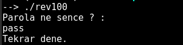
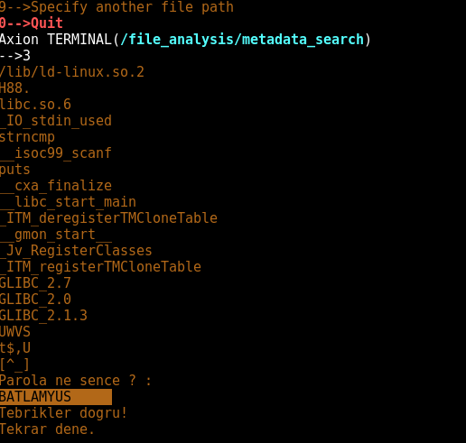
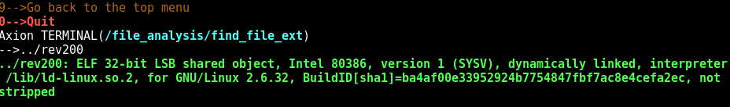
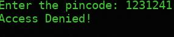
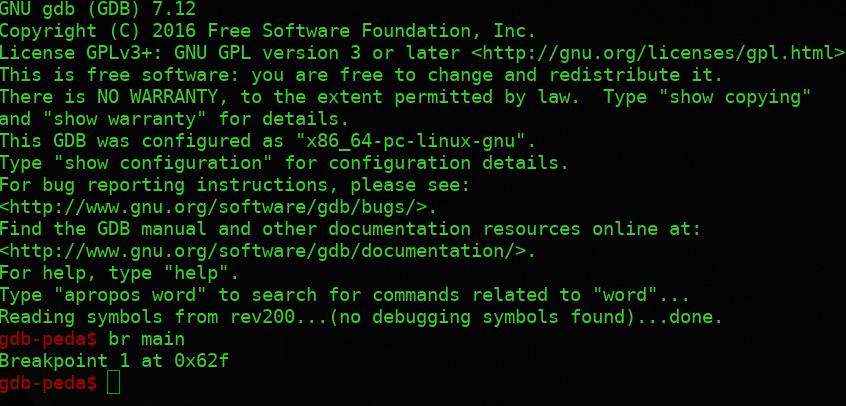
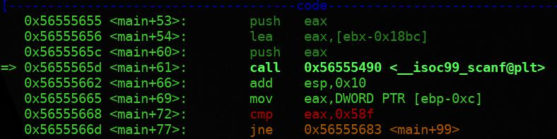
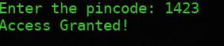

Reverse Engineering (RE) , Türkçe'ye "Tersine Mühendislik" olarak çevirebileceğimiz, yazılımsal ve donanımsal farklı teknolojilerin nasıl çalıştığının keşfedilmesi işlemidir.
Yine günümüzde bilgisayar yazılımları ve oyunlar da Reverse Engineering araçlarıyla kırılmaktadır.
Normal şartlarda örneğin C, C++ gibi programlama dilleriyle yazılan yazılımlar, Disassembler denilen ve kodu makine dili olan Assembler'a çeviren araçlar ile kırılmaktadır. Bu işleme Reverse Code Engineering (RCE) denmektedir.
CTF'lerde önemli bir alt soru grubu olarak karşımıza çıkan Rev sorularını çözmek için genelde özel araçlar kullanılarak derlenmiş kodu derlenmemiş hale getirmek gerekir. Böylece içlerine gizlenmiş Flag'lere ulaşabiliriz.
Reverse Engineering soruları çeşit bakımından çok fazla ama burda bir iki örnek yardımıyla anlatmaya çalışacağız.
Dosyanın çalıştırılabilir olduğunu gördükten sonra çalıştırmak için önce
chmod +x rev100
komutu ile çalıştırma izni veriyor ardından çalıştırıyoruz.

Bizden parola bilgisi istiyor. Axion'u kullanarak Metadata'sını görüntülüyoruz ve strings çıktısına bakıyoruz.

FLAG = BATLAMYUS
Axion ile dosyanın türüne bakıyoruz,

Sonrasında çalıştırıp baktığımızda program bizden bir girdi bekliyor ve doğruluğuna göre sonuç veriyor.

Programımızı şuana kadar yüzeysel olarak analiz ettik ve elimizde şunlar var; program bizden bir pincode istiyor ve bunu bir değerle karşılaştırıp doğruluğunu test ediyor. GDB kullanarak programın biraz daha derinlerine girelim. Programımızı gdb rev200 komutu ile çalıştırıp main fonksiyonuna breakpoint koyduk.

Sonra run komutu ile çalıştırdık. Bizim programdan beklentimiz bizden girdi aldıktan sonra bir karşılaştırma yapmasıdır. Girdiyi alacağı kısımda scanf fonksiyonu çağırıyor olacak ve hemen sonrasında bizden aldığı girdiyi olması gereken değerle cmp ile karşılaştırıyor olacak. Çalıştırdıktan sonra next komutu kullanarak tek tek ilerliyoruz ve scanf fonksiyonun çağrıldığı kısıma geldik.

Scanf’in çağrılmasının ardından cmp eax, 0x58f'in geldiğini görmekteyiz. Burda bizden istediği değerin 0x58f olduğunu bulduk, ancak bu hexadecimal(16lık tabanda) halinde, bunun decimal(10luk tabanda) halinde ki değeri bizi sonuca ulaştıracaktır 0x58f -> 1423 .

FLAG = 1423
Üsteki soruların çözümlerinde buradan yararlanılmıştır.